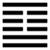

Sơn Trạch Tổn (損 sǔn)
Khoan nới thì tất có điều sơ ý mà bị thiệt hại, cho nên sau quẻ Giải tới quẻ Tổn. Tổn là thiệt hại mà cũng có nghĩa là giảm đi.
Thoán từ:
損: 有孚, 元吉, 无咎, 可貞, 利有. 攸往．曷之用 ? 二簋可用享．
Tổn: Hữu phu, nguyên cát, vô cữu, khả trinh, lợi hữu.
Du vãng. Hạt chi dụng? Nhị quĩ khả dụng hưởng.
Dịch: Giảm đi: nếu chí thành thì rất tốt, không có lỗi, giữ vững được như vậy thì làm việc gì cũng có lợi. Nên dùng cách nào? (ví dụ) dùng hai cái bình (hay bát) đồ cúng thôi để dâng lên, cũng được.
Giảng: Quẻ này nguyên là quẻ Thái, bớt ở nội quái Càn hào dương thứ 3 đưa lên thêm vào hào cuối cùng của quẻ Khôn ở trên, nên gọi là Tốn: bớt đi.
Lại có thể hiểu: khoét đất ở dưới (quẻ Đoài) đắp lên trên cao cho thành núi, chằm càng sâu, núi càng cao, càng không vững phải đổ, nên gọi là Tổn (thiệt hại).
Giảm đi, không nhất định là tốt hay xấu. Còn tùy mình có chí thành, không lầm lỡ thì mới tốt. Ví dụ việc cúng tế, cần lòng chí thành trước hết, còn đồ cúng không quan trọng, dù đạm bạc mà tâm thành thì cũng cảm được quỉ thần. Giảm đi như vậy để tiết kiệm, thì không có lỗi.
Thoán truyện giảng thêm: phải biết tùy thời; nếu cương quá thì bớt cương đi nếu nhu quá thì bớt nhu đi, nếu vơi quá thì nên làm cho bớt vơi đi, nếu văn sức quá thì bớt đi mà thêm phần chất phác vào; chất phác quá thì thêm văn sức vào, dân nghèo mà bốc lột của dân thêm vào cho vua quan là xấu; nhưng hạng dân giàu thì bắt họ đóng góp thêm cho quốc gia là tốt; tóm lại phải tùy thời; hễ quá thì giảm đi cho được vừa phải.
Đại tượng truyện thường đứng về phương diện tu thân, khuyên người quân tử nên giảm lòng giận và lòng dục đi ( quân tử dĩ trừng phẫn, trất dục).
Ý nghĩa các hào:
1.
初九: 已事遄往, 无咎, 酌損之．
Sơ cửu: Dĩ sự thuyên vãng, vô cữu, chước tổn chi.
Dịch: Hào 1, dương: nghỉ việc của mình mà tiến lên gấp, giúp (cho hào 4) như vậy thì không có lỗi, nhưng nên châm chước cái gì nên rút bớt của mình để giúp cho 4 thì hãy rút.
Giảng: hào 1 dương cương, ứng với hào 4 âm nhu ở trên, theo nghĩa thì nên giúp ích cho 4, nhưng cũng dừng nên để thiệt hại cho mình quá; như vậy là cũng hợp chí với người trên ở thời Tổn (rút bớt).
2.
九二: 利貞, 征凶, 弗損益之．
Cửu nhị: lợi trinh, chính hung, phất tổn ích chi.
Dịch: Hào 2, dương: giữ đạo chính thì lợi, nếu vội tiến ngay (bỏ đức cương trung của mình), để chiều bạn thì xấu; đừng làm tổn hại đức của mình cũng là ích cho bạn đấy.
Giảng: quẻ này có nghĩa tổn dương cương (quẻ Càn ở dưới) để làm ích cho âm nhu (quẻ Khôn ở trên); cho nên hào này là dương cương, nên giúp ích cho hào 5 âm nhu, cũng như hào 1 giúp ích cho hào 4. Nhưng hào 5 bất chính (âm mà ở vị dương), hay đòi hỏi những điều bất chính, nếu hào 2 bỏ đức cương và trung của mình đi mà vội vàng chiều lòng 5 thì sẽ xấu; phải giữ đức cương trung đó mới lợi (lợi trinh). Không làm tổn hại đức cương trung của mình, cũng là một cách khuyên hào 5 phải bỏ tính bất chính đi, như vậy là giúp ích cho 5 đấy.
3.
六三: 三人行則損一人, 一人行則得其友．
Lục tam: tam nhân hành tắc tổn nhất nhân,
nhất nhân hành tắc đắc kì hữu.
Dịch: Hào 3, âm: Ba người đi thì bớt một người, một người đi thì được thêm bạn.
Giảng: Theo tượng của quẻ, nội quái Càn có ba hào dương bớt đi một để đưa lên trên; ngoại quái Khôn có ba hào âm, bớt đi một để đưa xuống dưới, thành quẻ trùng tổn. Hào 3 dương đi lên, hào trên cùng âm xuống dưới, tương đắc với nhau, thế là tuy tách ra, đi một mình mà hoá ra có bạn.
Xét trong vũ trụ thì một dương một âm là đủ, nếu thêm một âm hay một dương nữa, thành ba thì thừa; mà nếu chỉ có một âm hay một dương thì thiếu, phải thêm một dương hay một nữa mới đủ.
Việc người cũng vậy, hai người thành một cặp, thêm một người thì dễ sinh chuyện, mà nếu chỉ có một người thôi thì lẻ loi quá, phải kiếm thêm bạn (coi Hệ từ hạ truyện, Ch. V số 13).
4.
六四: 損其疾, 使遄, 有喜, 无咎．
Lục tứ: tổn kì tật, sử thuyên, hữu hỉ, vô cữu.
Dịch: Hào 4, âm: làm bớt cái tật (âm nhu) của mình cho mau hết, đáng mừng, không có lỗi.
Giảng: Hào này có tật âm nhu, được hào 1 dương cương sửa tật đó cho mau hết, tốt.
5.
六五: 或益之十朋之龜, 弗克違, 元吉．
Lục ngũ: Hoặc ích chi thập bằng chi quí, phất khắc vi, nguyên cát.
Dịch: Hào 5, âm: thình lình có người làm ích cho mình, một con rùa lớn đáng giá mười “bằng”, không từ chối được, rất tốt.
Giảng: Hào này ở vị tối cao, nhu mà đắc trung, được hào 2 dương tận tình giúp ích cho, như cho mình một con rùa rất lớn. Sở dĩ vậy là vì hào này, đắc trung mà hiền (nhu) nên được lòng người, cũng như được trời giúp cho vậy (tự thượng hữu chí – lời Tiểu tượng truyện).
Chữ “bằng” mỗi nhà hiểu một cách: có người cho hai con rùa là một bằng; có người cho mười bằng là chu vị lớn tới 2.160 thước, có người bảo mỗi bằng là 10 “bối” [貝] (vỏ sò, ngao quí, hồi xưa dùng làm tiền, khi chưa có lụa, đồng) 10 hằng tức là 100 bối. Không biết thuyết nào đúng. Chúng ta chỉ nên hiểu con rùa 10 bằng là một vật rất quí thôi.
6.
上九: 弗損益之, 无咎．貞吉．利有攸往, 得臣无家．
Thượng cửu: phất tổn ích chi, trinh cát.
Lợi hữu du vãng, đắc thần vô gia.
Dịch: Hào trên cùng, dương: làm ích cho người mà chẳng tổn gì của mình, không lỗi, chính đáng thì tốt, làm việc gì cũng vô lợi, vì được người qui phu, chẳng phải chi nhà mình mới là nhà (ý nói đâu cũng là nhà mình, ai cũng là người nhà mình)
Giảng: Hào này tối nghĩa, mỗi sách giảng một khác, chúng tôi châm chước theo Phan Bội Châu. Dương cương ở trên cùng quẻ tổn, nên đem cái cương của mình giúp cho nhiều hào âm nhu, chính đáng như vậy thì tốt, mà chẳng hại gì cho mình, vì mọi người sẽ quí mến, qui phụ mình. Có người hiểu là đừng làm hại, mà làm ích cho người thì tốt. Lẽ ấy dĩ nhiên rồi.
*
Đại ý quẻ này là Tổn chưa chắc đã xấu, ích (tăng) chưa chắc đã tốt; còn tùy việc tùy thời, hễ quá thì nên tổn để được vừa phải, thiếu thì nên ích, và mình nên chịu thiệt hại cho mình mà giúp cho người.